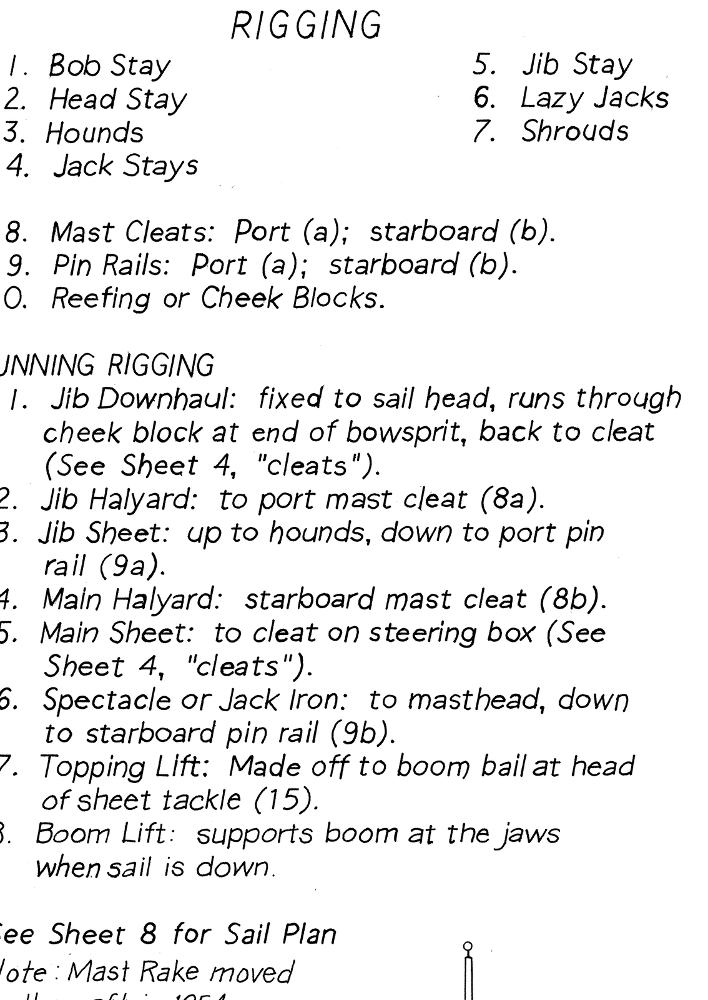

Original scan pixels: [10944, 652, 13504, 4264]; source SHA-256: fede6b7745aa3936961fd5b686034f624a1d56b7bd0f774192670cbb40c1dd9c.
Native lossless view · Raw OCR · Word coordinates/confidence · Manifest

RIGGING |. Bob Stay 5. Jib Stay | 2. Head Stay — 6, Lazy Jacks 3. Hounds 7. Shrouds 4. Jack Stays 8. Mast Cleats: Port (a); starboard (b). 9. Pin Rails: Port (a); starboard (b). O. Reefing or Cheek Blocks. INNING RIGGING I. Jib Downhaul: fixed to sail head, runs through cheek block at end of bowsprit, back to cleat (See Sheet 4, "cleats"). Jib Halyard: to port mast cleat (8a). . Jib Sheet: up to hounds, down to port pin _~ “) . rail (9a). Main Halyard: starboard mast cleat (8b). Main Sheet: to cleat on steering box (See Sheet 4, "cleats"). Spectacle or Jack Iron: to masthead, down to starboard pin rail (9b). Topping Lift: Made off to boom bail at head of sheet tackle (15). Boom Lift: supports boom at the jaws when sail is down. ee Sheet 8 for Sail Plan | ote: Mast Rake ‘moved